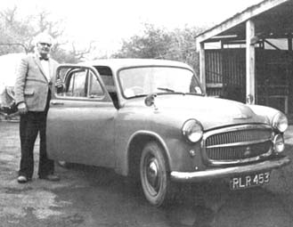
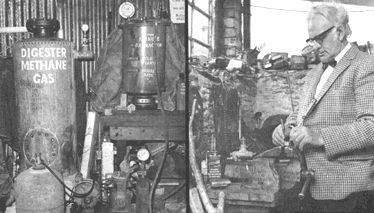
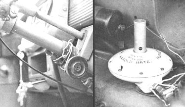
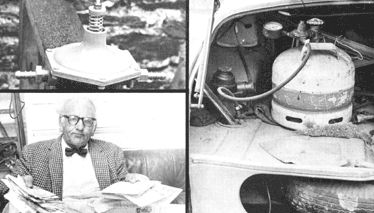

The Marvelous Chicken-Powered Motorcar!
Harold Bate of Devonshire, England, devised a way of producing automobile fuel from animal droppings.
by Barry Grindrod
July/August 1971
Harold Bate was born in 1908 in the city of Stoke in England's industrial midlands. He left school at the age of 14 to work as an apprentice mechanic with the Potteries Traction Company. Here he learned many basic engineering skills working on the old streetcars before becoming a maintenance engineer with the Stafford Coal and Iron Company. While with Stafford, Bate spent his spare time developing Submarine escape devices and advanced independent suspension systems for automobiles.
In 1937, Harold Bate lost a leg in a driving accident. This would have been the beginning of an insurmountable infirmity for many people ...but not for Harold. Ten years later..with wife, young daughter and cane--he set out for the grandest adventure of all: a driving tour of Africa.
"We travelled in an old ex-Army jeep," says Bate, "and, in eight years, drove 380,000 miles. It was hard, it was hot and at times it was dangerous ... but we wouldn't have missed it for the world. We loved every minute. Our daughter learnt more out there than she ever would have in school."
While in Africa, Bate prospected for gold and uranium in Rhodesia and Tanganyika (now Tanzania) and--on more than one occasion--the family was attacked by bandits and had to fight for their lives. For one long stretch, they lived off what wild game they could hunt in mile after mile of mango swamps (well stocked with poisonous snakes) through which they passed.
But there were good times too. The Bates were treated like Royalty when they visited the Sheiks of the North African deserts, for instance, and the family was also well looked after by head hunters in another primitive area. As the remarkable and durable Mr. Bate says, "It was one hell of an adventure."
On his return to England in 1955, Harold worked as an electrical contractor, started a ferry boat service and drove a taxi before turning his attention to unleashing the power hidden in manure.
Detroit and the large petroleum interests keep saying it can't be done but a 62-year-old English inventor has already done it. Harold Bate, British chicken Partner and experimenter, has developed a small conversion unit that makes any ordinary automobile virtually pollution-free. What's more (and hang on to your hat for this one), the Bate convertor can also cut your fuel oil, sparkplug and other miscellaneous automobile operating expenses by a factor of ten!
The Bate system accomplishes these amazing feats as naturally as a compost pile by recycling animal droppings and sewage into methane: a colorless, odorless, flammable gas. This means drat, as a bonus, Harold Bates development just may go a long way toward safely and naturally reclaiming the mountains of waste with which "civilized man " seems determined to bury the planet.
Interestingly enough, Bate did not make his noteworthy breakthrough in a well-equipped laboratory or while working on a mufti-million dollar research grant. The convertor and other parts of the Bate system were developed by Harold from odds and ends at hand as he puttered about his 450-year-old cottage and chicken farm in the heart of Devonshire.
To be sure, Harold Bate has invented nothing new in the way of a basic process. Methane has been forming naturally in swamps and waste organic matter since long before man walked the earth and many ingenious experimenters have harnessed this source of fuel in the past (see "Solution to Pollution," "Electricity from Manure Gases" and "How to Generate Power from Garbage," May 1970). But Harold does seem to be the first to have actually put the whole idea on a workable, homestead, "anybody can do it" basis.
From a 450-year-old cottage in the heart of Devon shire, England, a 62-year-old inventor is selling a remarkable chicken -powered car to the world. Yes, you read correctly. A chicken-powered car . . . for Harold Bate has devised a way of producing automobile fuel from animal droppings.
The secret is methane, a common by-product of the natural process of decomposition and a much cleaner fuel than gasoline. Mr. Bate generates me thane in usable quantities by simply speeding up nature a bit with a pressure "digester" . . . just as an organic gardener speeds up the decomposition of natural matter with a compost pile.
There's nothing complicated nor expensive about the Bate digester. Whereas the large petroleum corporations must refine gasoline in complex, multi-million dollar plumbing nightmares, Harold's methane cooker looks more like a recycled home fruit canner and is small enough to fit into the corner of any basement or garage. Converting a private car to operate on this natural fuel is just as straightforward and economical and--for an initial investment of $100 or less and a little elbow grease--almost anyone should be able to start riding the roads virtually free of charge . . . assuming there's a supply of animal droppings and/or other organic waste at hand.
The 16th Century Bate abode where this "every-man's gasoline plant" was born is not the easiest place to find. It's two miles from the nearest small village, well off the beaten track and completely hid den by trees . . . which is why the Bates moved in some four years ago. "We're away from it all here," says Harold. "We can't hear any traffic nor church bells. That's a blessing. I hate church bells . . . they're so mournful."
Despite--or, perhaps, because of--their recluse life, the Bates are cheerful, hospitable people who love the country and the way of life that goes with it.
Their closest friends are numbered amongst the local wildlife community and, throughout the day, a variety of birds fly into the open windows of the family cottage. Rabbits and squirrels are also a common sight on the Bate homestead.
In this tranquil setting, I asked Mr. Bate how he came to start work on his "free and clean" automobile fuel.
"It all started with the Suez Crisis in 1953," Harold said. "When Egypt closed the canal, it blocked England's supply route with the Middle and Far East. This meant that petrol imports were crippled and fuel here in Great Britain was rationed. I got fed up with that and started looking round for an alternative form of power. I knew that gas engines were used before petrol (gasoline) and I also knew that gas was more efficient than petrol . . . so I began to experiment.
"During the war I had done quite a bit of pig farming, and I knew that manure contained gases and that pig manure was very potent. A number of experimenters and sanitation facilities have been extracting gas from sewage for years now, but it's diluted so much that the process is slow. I therefore decided to concentrate on animal manure and find the best blend from which to extract methane . . . and then develop a method of feeding this gas into a car's engine.
"After experiments with just about every type of animal manure, I found I got the best results from mixing that of chickens and pigs. Chicken manure contains more nitrogen than others and pig droppings are useful because they generate heat so well."
Bate has also found a certain amount of straw and/or vegetable waste to be a valuable addition to his methane raw materials. The manure contributes mainly nitrogen and the straw provides carbon, it seems. The ideal mixture is about 75% droppings (half pig and half chicken) and 25% straw. Methane brewed up from this formula has a caloric value per liquid pound of 22,000 B.T.U. as compared to gasoline's 19,000, propane's 19,944 and butane's 19,680.
The excreta-straw formula is first stacked up into a compost pile, doused with water and left exposed to the air for about a week of aerobic prefermentation. When this prefermentation is complete, about three hundred pounds of the mixture is shoveled into a heavy steel container (Bate recommends a trash-mongered domestic water heater) and sealed shut. A wait of four, five or even seven days--depending on conditions--is then necessary before fermentation of the first batch starts. If a little of the original mix is left behind as a starter, however, gas production will usually begin within 24 hours for all following batches.
The real secret of a rapid, strong and complete transformation of waste into the maximum amount of methane is the maintenance of the 85 to 90° F temperature at which the necessary bacteriological digestion is most active. If the temperature of the digester rises above 104° F, no gas will be produced at all and - in extremely hot regions - a methane production unit should be shaded or otherwise protected from the heat. A digester set up in a temper ate or cooler zone, on the other hand, may need some supplemental heating from an electric element inside toe tank or a small kerosene (or methane!) flame under the unit.
By the way, for those who speculate that tile methane used to heat the digester might total more than the gas produced by the unit . . . taint so! An extremely low flame (a car sump heater is ideal) under a Bate digester can cause the tank to yield a right vigorous flow of gas.
Bate has fitted his digester tank with a safety valve set for 60 p.s.i. "just in case". Pressures in the extractor seldom reach a third that level, however, because Harold considers a digester internal pressure of 20 p.s.i. to be the signal to start up a high-pressure compressor (of the type used for filling aqualung diving bottles) and pump the collected gas from the extractor into an ordinary high-pressure bottle.
A filter between the digester and pressure bottle extracts the small quantities of phosphoric acid and ammonia that are present and the remaining almost-pure methane liquifies at a pressure of 1110 p.s.i.
Bate finds that it takes about one-half hour of steady pumping to fill a 32-pound (4.5 Imperial gallon) bottle to its capacity of liquid methane. This figures out to approximately 200 cubic feet of dry gas . . . or a fuel equivalent of seven gallons of good petrol (about eight and three-quarters gallon of high-test gasoline, to readers in the US).
The digester will continue to produce for several weeks and will then have to be topped up with more manure and the sludge run off. All in all, a single filling of 300 pounds of manure will produce about 1500 cubic feet of methane equivalent to roughly 50 gallons of petrol (62 US gallons). That's not bad and Bate figures it costs him only three cents to produce the equal of an Imperial gallon of petrol.
Once he had a guaranteed supply of methane, Harold next faced the problem of getting the high-pressure gas into his car's engine in the exact amount required by the powerplant under all operating conditions. His answer, of course, was the now-famous 6" x 5" carburetor attachment which he calls the Bate Auto Gas Converter.
The attachment (it looks like a model flying saucer) fits between the methane pressure bottle and the car's carburetor and allows the cylinders of the engine to suck just enough methane--and no more-from the bottle as the fuel is needed. The only modification made on the engine itself is the simple tubular jet which is threaded into the choke tube of the carburetor before the throttle butterfly valve. A run of rubber tubing connects this to the Bate converter and a further run goes back to wherever the methane bottle is carried. No mechanical linkage or other complicated modification is necessary.
Incidentally, the storage of the methane need not be restricted to high pressure bottles. A rubber dinghy, air bed or even giant inner tubes carried on the roof of the car would be just as effective . . . or as Bate says, "Fill your tires with methane and run till they're flat!"
Motoring on methane offers more than the 3 cents-a-gallon economy mentioned earlier. Mr. Bate finds that the gas gives 97 to 98% combustion compared to the 27% combustion (with the rest going out the exhaust in the form of carbon and pollution) of gasoline. So there's a definite ecological benefit. Engine wear is also markedly cut since methane, being dry; cannot dilute nor contaminate motor oil in the way that gasoline does . . . and sparkplugs last much longer. "I've taken plugs out of my car after five years and more, and they've been as clean as the day I put them in," says Bate. "My car runs cleaner, smoother and has more power on methane."
To prove his words were no idle boast, Harold took me for a demonstration drive in his famous 1953 chicken-powered Hillman.
When he started the car on petrol and the vehicle broke into a rather lumpy idle, Bate flicked a switch on the dashboard and turned a knob on the steering column. "I've cut off the petrol," he explained. "When the float chamber on the carburetor empties, we'll be running on methane. You'll see the difference."
And I did. In a matter of moments the rather weary 18-year-old engine settled down to a smooth purr and, on a short demonstration run, the bulky vehicle made light work of the switchback lanes around Bates home. Throttle response was incredibly good and there were no flat spots such as are common with carburetion using normal fuel in machines of this age.
"I get five more miles to the gallon on methane than I get from an equivalent amount of petrol," Harold said. "This is because the dry methane has a higher calorific value and there is no waste of unvaporized fluid. Absence of oil dilution and reduced carbon deposits are just bonuses."
Incidentally, all the advantages which methane bestows on an automobile--economy, pollution reduction, longer life and reduced maintenance--are just as evident when the gas is burned in tractors, trucks and stationary engines. Methane produced on the homestead can also be used to heat water, run a refrigerator, cook food, warm a house and do all the other jobs that we now do with natural gas. With a large enough digester and a ready supply of animal droppings, then, it is possible that a family farm might supply all its own power requirements from this one source alone.
Of course, it remains to be seen if such self-containment is desirable. Perhaps we're all better off simply recycling the manure back to the fields, selling the car and appliances and getting a horse. Time will tell. In the meantime, it certainly is possible to construct a methane generator large enough to power a homestead, and Mr. Bate has devised one that utilizes septic tank wastes.
This large digester consists of a pit dug in the ground and lined with brick or concrete (a tank built on a low foundation above ground would also suffice) measuring approximately 10-feet square with an adjoining storage tank of the same size or larger.
To prepare the system for non-stop production of methane, the usual septic tank vent pipe is fitted with a gas trap and any other openings are sealed. A no-return flap valve is fixed on the sewer pipe where it enters the digester (to keep the gas from escaping through the inlet) and another no-return valve is inserted in the line between the extractor and storage tank. This allows methane to pass to storage (but not return) as the gas is generated.
A hole is then made in the digester cover and a thermostatic electric immersion heater is mounted so that it reaches well down into the raw sewage. The thermostat is set to give a steady heat of 85 to 90 degrees Fahrenheit and another small hole is drilled in the digester cover for the insertion of a check thermometer into the sewage from time to time. This last hole is fitted with a gas-tight stopper except for the brief periods when a temperature check is being made.
If the tank is built above the ground, the digester can be heated by a steam pipe run through the contents and connected to the domestic hot water supply. It can also be heated by a gas ring or burner under the extractor and, once methane is being produced, this burner may be connected into the gas storage tank . . . allowing the system to heat itself.
As ingenious as this arrangement may be, Harold Bates restless mind is already far down the road to greater things. At the moment he's waiting for a patent on his discovery of a method for abstracting the liquid content from chicken manure. It seems that chicken droppings in their natural state are too sticky to be a convenient fertilizer . . . but--with the liquid abstracted--the manure makes two very good fertilizers, one dry and one liquid.
"The so-called experts have been working on that one for years," chuckles Bate. "I solved it in no time. It's a question, I think, of overlooking the obvious. My next project, if and when I get the time, is the development of an electric car that will generate its own power. I know I can do it."
In the meantime, Harold is still faced with the problem of convincing the boffins and powers-that-be to accept his already-proven ideas on methane. The Bate conversion, you see, has already received the stamp of official approval from the British Government's Ministry of Transport . . . but it seems distinctly unlikely that those chaps--who collect a 75% tax from the price of petrol--are going to advocate a mass changeover to homemade fuel at 3 cents a gallon.
The story is much the same right down the line: it takes money to promote and market do-it-yourself methane on a large scale . . . and the people with money generally find it to their advantage not to promote methane.
Be that as it may, the facts speak for themselves. Bates invention is simple, it's incredibly inexpensive . . . and it works. Hundreds of people, who are now driving chicken-powered cars the world over after contacting Mr. Bate directly, can vouch for that. And the word is beginning to spread.
So--until a large firm finally sees the light, buys Harold out and begins to promote his digester and convertor in a big way--Mr: Bate and his wife, Evelyn, will continue doing the job alone. And that means that, for as many as 18 hours a day, Evelyn will sit in the picturesque 16th-Century cottage answering letters while Harold handcrafts methane generators in a small workshop at the bottom of the garden path.
That seems as nice a way to change the world as any.
|
 Who needs a tiger in their tank? Harold Bate, chicken farmer and inventor from Devonshire, England says that you can power your motor vehicles with droppings from chickens, pigs or any other animal of your choice . . . even with your own waste! To prove his statement is no idle boast, Harold has been operating a 1953 Hillman and a, five-ton truck on methane gas generated by decomposing pig and chicken manure for years. He claims that the equivalent of a gallon of high-test gasoline costs him only about 3 cents and that the low-cost methane makes his vehicles run faster, cleaner and better than they operate on "store bought" fuel. Mr. Bate stands beside his famous Hillman in the photo above. |
 LEFT:Harold Bates pilot Manure Extractor and the Manure Digester that he uses for day-to-day generation of automobile and truck fuel. Note the high-pressure compressor with which Bate fills a storage bottle (lower left of photo) to a pressure of 1100 pounds per square inch. RIGHT: From this cluttered home workshop, Harold Bate challenged the multi-billon dollar petroleum industry and won! |
 LEFT: Harold Bate holds pressure tank of home-made methane. RIGHT: Graphic proof that Harold's small pilot Manure Extractor does the job! Methane from the digester first bubbles into a gallon bottle of water and then passes to a small gas jet where it is easily ignited and supports a flame. Obviously, part of the methane generated by a large digester can be piped to a burner under the extractor for use in maintaining the tank at the optimum gas generating temperature. |
|
 LEFT: Nothing fancy here! Harold has simply ""hay wired"" the methane gas cylinder valve to the steering wheel of his Hillman. RIGHT: The Bate Auto Gas Converter (demand regulator) as mounted in Harold's 1953 Hillman. The white cover here is purely decoration. Note, again, the rather casual manner in which Bate has installed his accessories in his own car. |
 RIGHT: We find, secured by another twist of wire, the pressure tank of methane which fuels the Bate Hillman. In this case, the tank is a recycled ""camping gas"" bottle of a type common in England. LEFT: The patented Bate Auto Gas Converter with all frills removed. This important piece of hardware and instructions for setting up your own methane plant is what you receive when you buy a converter from Bate. BELOW LEFT: There are days when being a world-famous chicken farmer-inventor is a royal drag. |
|